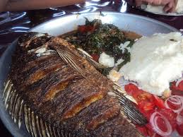

CULTURE
Kenya is a culturally diverse country with a rich heritage that blends tradition and modernity:
- Tribal groups
Kenya has over 40 ethnic groups, each with their own language, dress, music, and food. The six largest tribes make up about half of the population and have a strong influence on Kenyan culture.
Traditional values
Kenyans practice traditional values such as humility, concern for neighbors, and maintaining kinship ties. Traditional beliefs and practices influence activities like marriage, child naming, and burials.
Communication
Kenyans are generally friendly and sociable, and tend to use non-explicit techniques to communicate. Disagreement is seen as a sign of disrespect, especially with elders.
Etiquette
Dining etiquette includes washing hands before and after meals, covering your mouth when coughing or yawning, and serving guests first. Business etiquette includes dressing officially, saying hello, and not making promises you can't keep.
-
Food
Some Kenyan foods include chapati, fish,ugali e.t.c

-
Gaming
Kenya has a growing gaming culture with events like the 1UP Elite LAN parties and the Kenya International Gaming Series. Some Kenyan gamers have also started their own YouTube and Twitch channels.